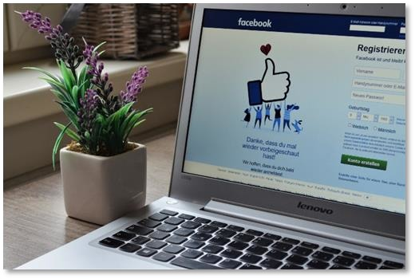

What is Facebook Marketing?
Facebook marketing is the use of Facebook as a digitalized marketing channel. If we talk more specifically, it is the use of the Facebook and its features to promote your brand, your business, and your products, to engage your audience, to collect leads, to communicate with potential customers, to build awareness, to generate traffic, and to drive sales. Facebook is a marketing-friendly platform with a business-oriented environment, where you can build a presence for your business by providing value through content, conversations, and entertainment. And guess what? It's free forever to all or atleast facebook never asks for money on signup.How does it work?
Facebook Marketing works primarily by building a social presence for your brand that users can interact with. This means you are going to create a profile for your business the same you would create a profile for yourself. In fact, the Facebook Marketing mindset is similar to the personal brand mindset: you create a page for your business that people can Like or Follow, where you are going to publish posts that sound casual and engaging to make it easier for people to interact with your brand. Once you establish a presence and build a following, you are going to raise awareness about your products, services, and offers by curating branded content from your website or other content channel. Right after you can start promoting your stuff a little more aggressively through contests and by sharing promotions such as discounts to get your audience interested in your stuff. Then you can start using Facebook features for businesses, such as Facebook ads and Facebook remarketing.Why should you consider Facebook for Marketing? The most primary reason for using Facebook as a marketing tool is it is still the most visited, most active social media site that exists, with over a billion active users a month. This means that finding the perfect audience for your business is easier on Facebook. Facebook itself provides you with plenty of tools to engage your audience, including business pages, groups, chat, live video, and multimedia posts. They also gives you all the flexibility you need to promote your brand and to send traffic from your pages and groups to your website. Plus, Facebook has what is perhaps the second largest and most cost-effective advertising platform on the internet.What benefits can Latest Facebook Marketing bring for your Business?
With Facebook Marketing you will learn all the steps involved in building a presence for your business on Facebook the right way. Here you’ll also learn the marketing tactics that work on Facebook, and proven strategies with an amazing track record of generating results and profits for businesses in any niche. Latest Facebook Marketing also shows you the correct way of setting up paid campaigns on Facebook for maximum results and maximum return on investment, so every dollar your business puts into paid ads goes back to your balance. Furthermore, with Facebook Marketing you’ll learn how to create long-term brand loyalty and repeating customers at a fraction of the cost you’ll pay if you hired an agency, all by learning how to do it yourself! Now, Tighten your seatbelt and get ready for a boost!